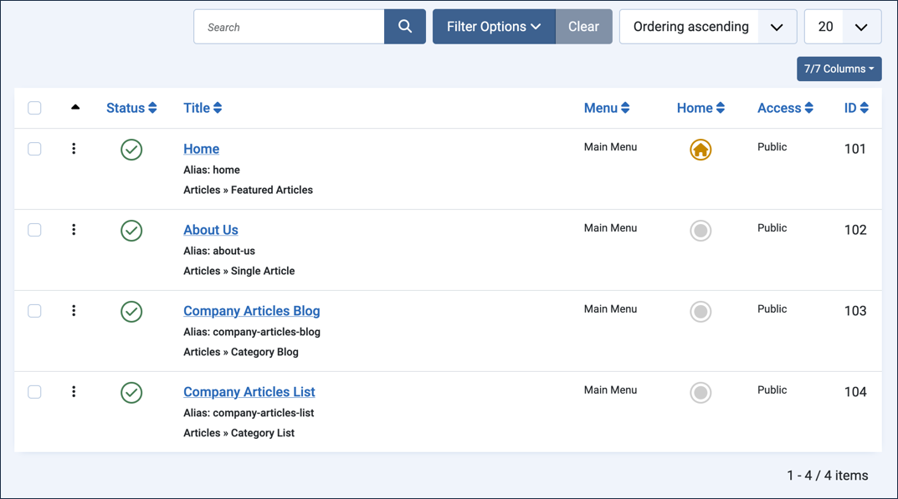
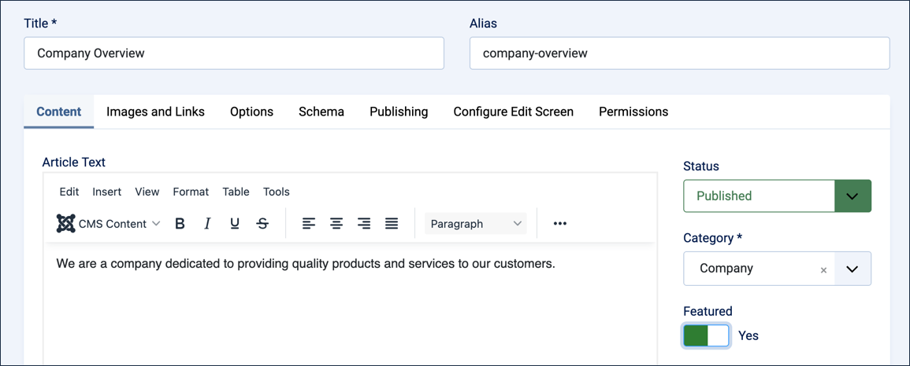
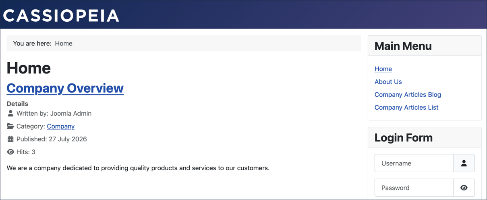
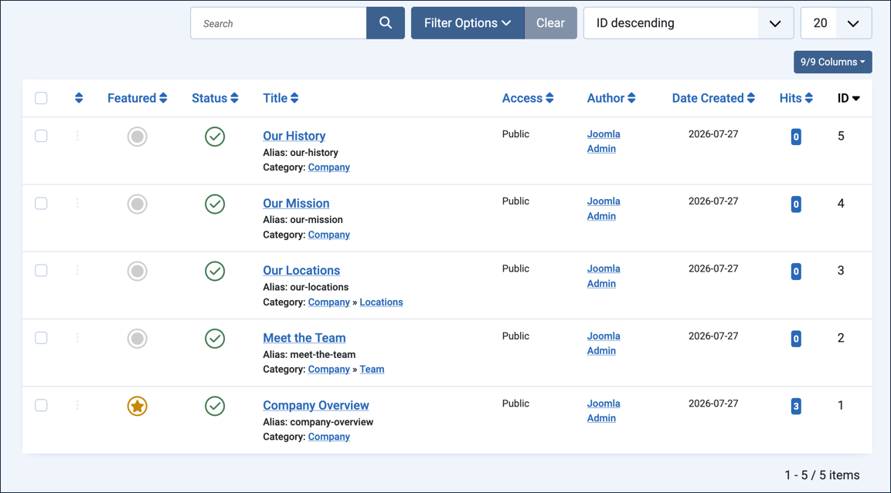
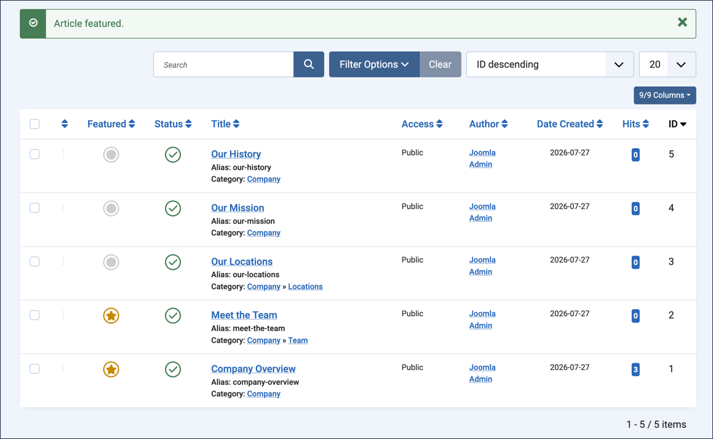
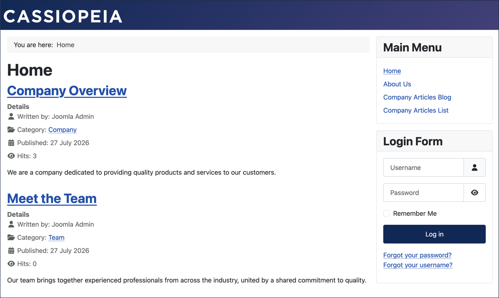

In Joomla, featured articles are those designated for special emphasis on the site, to appear more prominently than other articles. This tutorial describes how to designate a featured article that appears on the homepage.
Log in to Joomla backend and navigate to the Home Dashboard.
In the Administrator Menu, click Menus > Menu Items. Result: A list of menu items appears.
Look at the Home row. Result: Underneath the title, the list already shows Articles > Featured Articles — you don't need to open the menu item to see its type.

The menu items list — each row's type is visible beneath its title
Feature the Company Overview Article
In the Administrator Menu, click Content > Articles.
Click Company Overview to open it for editing.
Set the Featured field to Yes.

Setting Company Overview's Featured field to Yes
Click Save & Close.
View the site. Result:Company Overview appears as a featured article on the homepage.

Company Overview appearing on the homepage
Return to the backend article list. Result: Next to Company Overview, the Featured column now shows a gold star — this is the same toggle you just set via the article's edit form.

The gold star marks Company Overview as featured; the other articles aren't yet
Feature a Second Article from the List
You don't have to open an article for editing to feature it — the star icon in the Featured column can be clicked directly.
In the Featured column, click the icon next to Meet the Team. Result: A confirmation message appears ("Article featured."), and the icon changes to a gold star.

Meet the Team is now featured too, toggled directly from the list
View the site. Result: Both Company Overview and Meet the Team appear as featured articles on the homepage — featuring works the same way for an article in a sub-category as it does for one in the parent category.

Both featured articles now appear on the homepage
Concepts
Featured articles appear on the homepage because the Home menu item is a Featured Articles menu type.
Featured articles may use a read more button to control the amount of article text that appears in the article list.
The Featured column's star icon can be clicked directly from the article list to toggle Featured on or off, without opening the article. The article list can also be filtered to find featured articles, which we'll cover in 5.1 Filter Articles.
Article order is managed in the Blog Layout tab of the menu item.